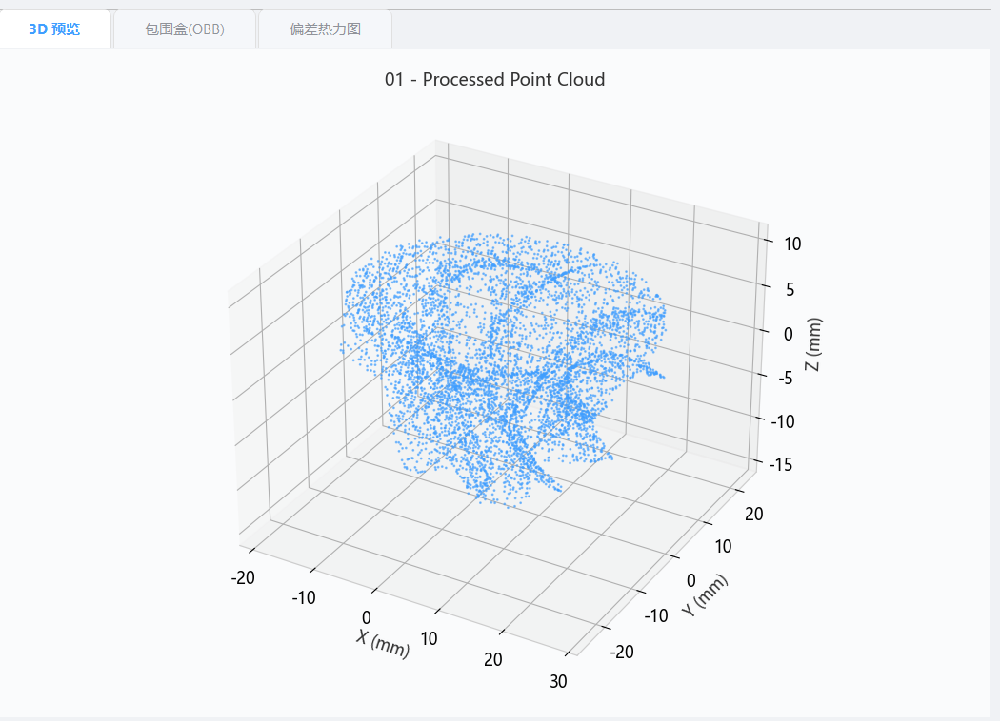
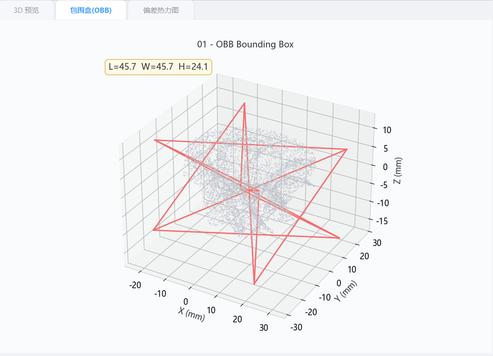
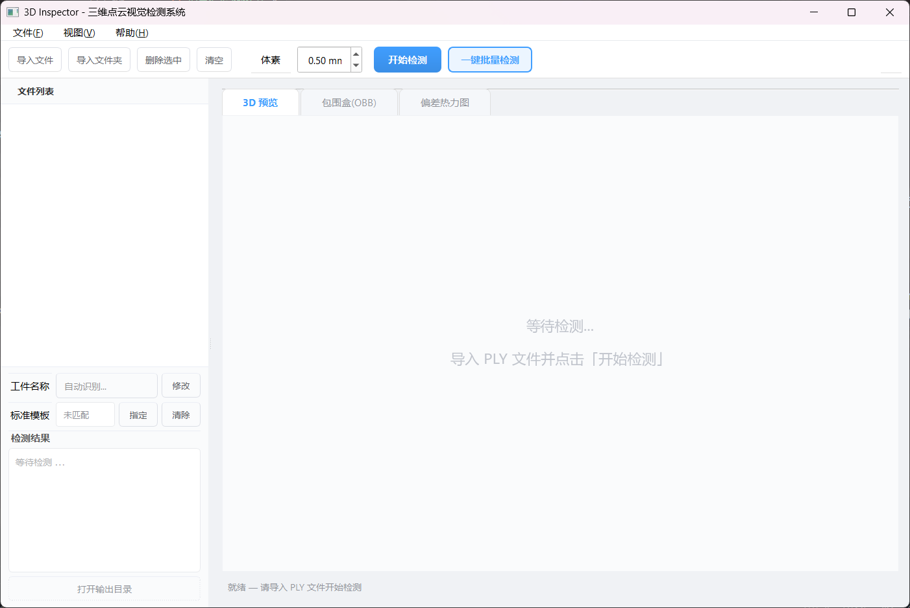
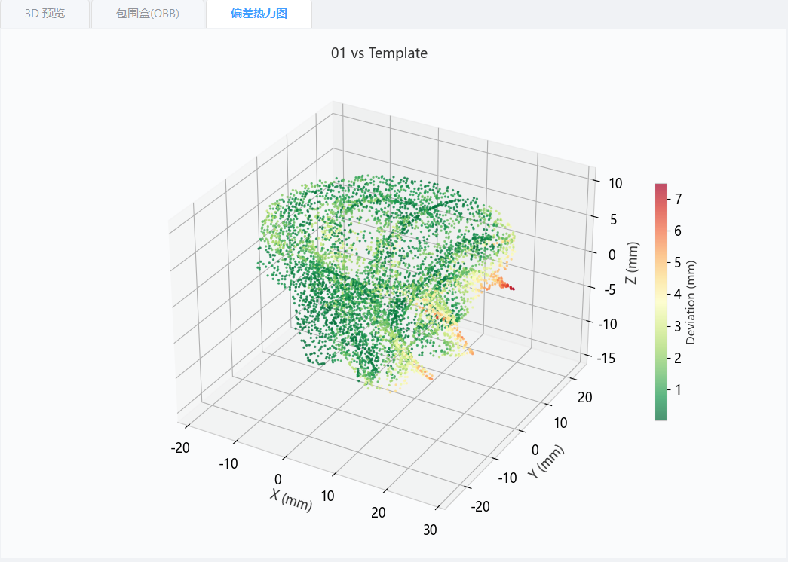

3D INSPECTOR · 综合实训项目汇报
计算机与软件学院 | 自信 · 设计导向
工业三维检测需求 + Python/Open3D/PyQt5 技术选型
预处理 → 配准 → 测量 → 可视化
GUI 界面、模板对比、批量检测
功能测试、性能指标、项目成果
背景
2
工业产品三维尺寸检测是智能制造的关键环节。传统检测依赖人工卡尺或三坐标测量机，效率低、成本高。三维点云技术可实现对零件外形的高精度数字化采集与分析。
基于 Open3D 构建完整的工业零件三维视觉检测系统，实现 PLY/PCD 自动加载、OBB 尺寸测量、贯穿孔检测、模板偏差分析、批量检测等功能，提供 GUI 桌面应用和 CLI 命令行双入口。
架构
2
5 个核心源文件 + 1 个 GUI 模块：utils.py（校验日志）、preprocessing.py（预处理）、registration.py（配准）、measurement.py（测量）、visualization.py（可视化）、gui/main_window.py（界面）。GUI 与 CLI 共享同一套核心算法模块。
PLY 文件 → load_ply() → PointCloud → 预处理管道 → PCA 对齐 → 测量分析 → 可视化输出。InspectionWorker (QThread) 后台处理，4 种信号通信。

配准
4
协方差矩阵特征分解 → 主方向旋转矩阵 → 工件摆正到坐标轴
33 维 FPFH 特征 → 全局搜索匹配 → 400 万次 RANSAC 迭代 → 4 点采样匹配
点对点迭代最近点 → 最小化距离残差 → 相对收敛精度 1e-6
模板对比 RMSE: 0.0234mm ✓ ≤ 0.5mm。逐点偏差通过 C++ 底层 compute_point_cloud_distance() 高效计算

工具栏：导入文件

模板对比
4
导入 01.ply → 自动扫描同目录 01_template.ply / 01_ref.ply / 01_standard.ply。支持 PLY 和 PCD 双格式
加载模板 → PCA 对齐 → FPFH+RANSAC 粗配准 → ICP 精配准 → compute_point_cloud_distance() 逐点偏差
模板对比各阶段 > 30s → 弹窗提醒 → 跳过模板 → 继续无模板检测。所有异常写入 inspection.log
dimensions.txt 新增: 模板文件名 + ICP RMSE + 最大/平均/标准差（mm）

测试
2
✓ 单文件PLY/PCD检测 ✓ 模板自动匹配 ✓ 手动指定模板 ✓ 批量检测 ✓ 名称修改+txt重写 ✓ 超时保护 + 无效文件提示 ✓ CLI命令行 ✓ EXE打包
✓ 空文件/错误后缀提示 ✓ 无模板模式正常 ✓ 工件切换缓存隔离 ✓ 重复检测不覆盖 ✓ 文件夹混合过滤 ✓ 模板自动跳过 ✓ 多次检测目录独立
成果
6
src/ 6 个核心模块 + tests/ 20 条单元测试用例，模块化架构，接口清晰可独立测试
PyQt5 主窗口，QSS 现代化样式，QThread 后台处理，支持中文界面，三标签页可视化
PyInstaller 打包，372MB，双击启动，无需安装 Python 环境
FPFH+RANSAC 粗配准 + ICP 精配准，30s 超时保护，自动匹配+手动指定
一键批量处理，结果独立缓存，点击切换即时查看，失败自动跳过继续
完整文档：README + 设计文档 + 项目报告 + PPT。版本管理，可追溯
3D INSPECTOR
Open3D 0.19 · PyQt5 · NumPy · Matplotlib